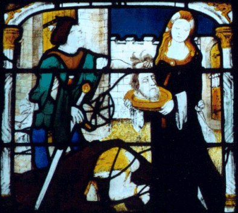
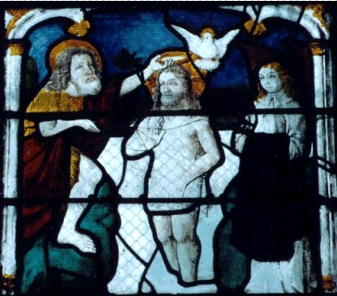

EMBLEMA XII.
revu le 4 mai 2002
Lapis, quem Saturnus, pro Jove filio devoratum, evomuit, Pro monumento in Helicone mortabilus est positus.
(La pierre que Saturne avait dévorée à la place de son fils Jupiter et qu’il avait vomie est posée sur l’Hélicon, monument pour les mortels1.)
Tu veux savoir pourquoi les poètes souvent
Parlent de l'Hélicon, de sa cime à gravir ?
Un monument se trouve en son sommet ; la Pierre
Que Saturne engloutit, pour son fils, et vomit.
Tu erres en prenant ces mots ainsi qu’ils sonnent.
Car de Saturne ici c’est la Pierre chymique2.
Nous rencontrons l’allégorie de Saturne interprétée de diverses manières. Les astronomes en effet l’ont appliquée à l’astre le plus haut dans l’ordre des planètes, les apprentis chimistes, au métal le plus bas, à savoir le plomb3. Les poètes païens l’ont tenu pour le père de Jupiter et le fils du Ciel ; les mythologues ont vu en lui le temps. Tous paraissent avoir pensé d’une façon juste à leur point de vue et possédé des justifications satisfaisantes de leur opinion. Cependant ils n’expliqueront pas ce que l’on raconte encore de Saturne : pourquoi il a avalé et vomi ses enfants, ainsi qu’une pierre à la place de Jupiter, pourquoi il est l’inventeur de la vérité, pourquoi il a pour attributs la faux, le serpent, la couleur noire, la tristesse et possède des jambes flageolantes. Les mythologues croient donner de cela l’interprétation la plus excellente : le temps, disent-ils, découvre la vérité et l’arrache aux ténèbres, il s’écoule en se déroulant comme un serpent, il anéantit toutes choses par la mort, comme à l’aide d’une faux, il dévore ses enfants c’est-à-dire toute les choses qu’il a engendrées, il ne peut digérer, c’est-à-dire faire disparaître entièrement les pierres dures, donc, en quelque sorte, il les vomit.
Certes, ces explications conviennent partiellement, mais elles ne cadrent pas avec la totalité du sujet, de la vérité et des circonstances. Les philosophes expérimentés déclarent pour leur part que Saturne est le premier à se présenter dans leur œuvre ; s’il est vraiment là, on ne peut se tromper et la vérité a été trouvée dans les ténèbres4.
Selon eux il n’est rien de plus excellent que le Noir. C’est pourquoi ils disent :" Toute couleur qui surviendra après la noirceur est digne d’éloges dans l’Assemblée des philosophes. Et lorsque tu auras vu ta matière devenir noire, réjouis-toi car c’est le principe de l’œuvre ".
" Et dès qu’elle devient noire, nous disons que c’est là la clé de l’œuvre, car celle-ci ne se fait pas sans la couleur noire "
selon le Rosaire citant Arnaud. Et le Miroir affirme :
" Lorsque tu te seras mis à l’ouvrage, fais en sorte d’obtenir au commencement la couleur noire, et tu seras alors assuré que tu pourris et que tu suis la voie droite.
" Et peu après :
" Cette noirceur est appelée Terre ; elle s’obtient par une cuisson légère, réitérée le nombre de fois nécessaire jusqu’au moment où le Noir apparaît à la surface "5.
C’est pourquoi les mêmes affirment que Saturne a pour domaine la terre. Mercure l’eau, Jupiter l’air, et le soleil le feu. La couleur noire est donc Saturne, le révélateur de la vérité, qui dévore une pierre à la place de Jupiter. Car une noirceur, c’est-à-dire une nuée sombre, recouvre tout d’abord la pierre pour la dérober à la vue. Aussi Morien déclare :
" Tout corps, s’il est privé d’âme, apparaît obscur et ténébreux. "6
Et Hermès :
" Prends son cerveau, broie-le au moyen du vinaigre très aigre ou avec de l’urine d’enfants, jusqu’à ce qu’il devienne obscur ".
Cela accompli, il vit dans la putréfaction, et les sombres nuées qui avant sa mort s’étaient trouvées au-dessus de lui et dans son corps reviennent.
Cette pierre est ensuite vomie par Saturne, lorsqu’elle blanchit. Elle est alors placée au sommet de l’Hélicon comme monument destiné aux mortels, ainsi que l’écrit Hésiode. Car la blancheur se cache en réalité sous le noir et on l’extrait de son ventre, c’est-à-dire de l’estomac de Saturne. D’où les paroles de Démocrite :
" Purifie l’étain par une ablution spéciale, extrais-en sa noirceur et son obscurité, et sa blancheur brillante apparaîtra ".7
Et il est dit dans la Tourbe :
" Joignez le sec à l’humide, c’est-à-dire la terre noire à son eau et cuisez jusqu’à ce qu’elle blanchisse ".
Et Arnaud dans La Nouvelle Lumière, au chapitre IV, s’exprime de façon parfaite lorsqu’il dit :
" L’humidité qui, dans la digestion, servait de remède à la noirceur, se montre donc desséchée lorsque la blancheur commence d’apparaître. "8
Et un peu plus loin :
" Et mon maître me dit, parce que cette couleur brune montait, que la blancheur était extraite du ventre de sa noirceur, comme il est dit dans la Turba. Car lorsque tu auras vu le Noir lui-même, sache que sa blancheur est cachée dans le ventre du noir qui apparaît d’abord. "9
Outre le nom de Saturne, cette couleur noire reçoit celui de plomb. D’où les paroles d’Agadimon dans la Tourbe :
" Cuisez l’airain jusqu’à ce que sorte le noir que l’on appelle pièce de monnaie, et mêlez bien les substances de notre art, et vous trouverez aussitôt le noir qui est le plomb des sages, duquel les sages ont abondamment parlé dans leurs livres ".
Ici il fait allusion au propos d’Emigan :
" Quand la splendeur de Saturne s’élève dans l’air, elle n’apparaît pas, sinon enténébrée. "
Il pense aussi à Platon, dans le Rosaire :
" Le premier régime, celui de Saturne, est de pourrir et de mettre au soleil. "
Tout ceci montre à quel point la pensée des philosophes est éloignée des opinions vulgairement reçues, quand ils parlent de Saturne. Saturne engendre Jupiter, c’est-à-dire une blancheur sombre10 ; Jupiter, de Latone, engendre Diane, c’est-à-dire le Blanc parfait, et Apollon, c’est-à-dire le Rouge11. Et tel est le mode dont les couleurs parfaites permutent successivement entre elles. On dit que cette pierre rejetée par Saturne est placée comme monument destiné aux mortels, au sommet d’une montagne, ce qui est la vérité même.
Notes1. Nous rejoignons, par le mont Hélicon, les fontaines d'eau permanente dont parlent tant d'alchimistes. La chaîne de montagnes qui contient le mont Hélicon, en Béotie, était le lieu de séjour d'Apollon et de son cortège de Muses. Il y jaillissait les fontaines d'Aganippé et d'Hippocrène. [Principes, St Grégoire].
2. Ce sommet a été de nombreuses fois évoqué. On le trouve dans le De Lapide Philosophorum de Lambsprinck. Il évoque le mariage des deux principes, au sommet de la montagne, là où la couleur du ciel est bleu-noire. C'est une transition entre le régime de Saturne et celui de Jupiter.
3. sur Saturne, voir l'humide radical métallique. Sur le plomb noir [plumbum nigrum] et le plomb blanc [plumbum album], voir Introïtus, VI.
4. Tout cela est très connu. Saturne est là pour Cronos et désigne le premier état du Mercure, appelé par Jung le Mercurius senex. Il dévore ses enfants, ce qui signifie qu'il liquéfie les métaux en rendant soluble les « chaux métalliques », c'est-à-dire les oxydes [cf. humide radical métallique]. Il existe toutefois des substances « incombustibles » qui résistent à l'action dissolvante du Mercure. Au nombre de ces substances, on compte le Sel des Sages dont nous avons donné le nom vulgaire déjà bien des fois [cf. Fontenay, par exemple]. C'est ce Sel qui constitue l'allégorie de cette pierre que rejette Saturne. Cette allégorie se double d'une autre fable où l'on donne à Saturne une pierre à avaler en lieu et place de Jupiter. C'est le lieu de rappeler le rapport de déités aux éléments : Jupiter ordonne au Ciel et à la Terre ; Poséïdon à l'Eau et Héphaïstos au Feu. Nous voyons que des quatre éléments, seuls le ciel et la terre participent réellement à la préparation de la pierre. Le ciel - celui que Philalèthe, qu'il nomme l'Air des Sages - contient la teinture en dissolution [Soufre rouge] tandis que la terre contient le « corps » de la pierre ou Sel [appelé Arsenic par Geber]. L'eau et le feu participent du Mercure et sont les éléments qui lui assurent son double caractère igné et aqueux. La dernière phrase de ce passage fait référence à un célèbre traité : la Lumière sortant par soi-même des Ténèbres [Lux obnubilata] que nous avons commenté. Pour le symbole de la faux, voir St Grégoire sur Vièvre. Pour le serpent, voir Réincrudation.
FIGURE I
(décollation de saint Jean Baptiste - vitrail de Notre Dame de Bourges - cliché Alain Mauranne)Tout dans la scène de la figure I évoque le thème de la noirceur, marqué par la décollation de saint Jean Baptiste. Les couleurs sont tout à fait particulières et font, réellement, de ces vitraux, des pièces derrière lesquelles on devine des psaumes.
5. Le thème de la noirceur est absolument récurrent chez les alchimistes. On peut se perdre en conjecture sur ce qu'ils ont vraiment voulu signifier par là. Au stade de nos recherches, la noirceur peut être conçue de deux façons :
a)- soit une couleur réelle qui se développe lors du chauffage d'une substance. Nous avons vu que, dans la préparation du salpêtre et de la chaux, la couleur noire apparaît. Elle survient aussi lors de la préparation du carbonate de potasse ou borith.
b)- soit une couleur vue avec le seul entendement. Il s'agit alors d'une disparition, c'est-à-dire d'une solubilisation. Celle-ci prend lieu au début de la Grande coction quand les éléments pulvérisés sont mixés et chauffés [ceci s'entend par la voie sèche].
6. Allusion au soufre rouge, sublimé - c'est-à-dire dissous - dans le fondant.
7. L'estomac de Saturne est aussi appelé estomac de l'autruche. Par là est désignée la substance qui est dissoute mais qui continue d'exister, en puissance. Ce passage est évidemment assez ardu car il veut rendre compte de phénomènes dynamiques [vu dans d'autres sections]. Il est par contre évident que l'étain ne désigne pas le plumbum album vulgaire. Comme le dit Fulcanelli, c'est de l'airain qui tient de l'étain grenaillé et de la noix de galle.
8. On voit bien que la solution passe par une évaporation progressive, comme l'a bien montré J.J. Ebelmen dans ses expériences. Tout n'est pas aussi simple : l'humidité qui sert de remède à la noirceur n'est autre que le Mercure fondu à haute température [1300°C au quatrième degré de feu, selon Fulcanelli]. La blancheur signale donc le début de la coagulation de l'eau mercurielle.
FIGURE II
((résurrection - vitrail de Notre Dame de Bourges - cliché Alain Mauranne)De même peut-on voir, en cette figure, l'image de la blancheur. A droite, sainte Madeleine tenant le saint suaire. Au-dessus du Christ, une colombe.
9. C'est cette noirceur qu'il faut comprendre par l'entendement. Quant à l'allusion au ventre, elle rappelle celle de la Table d'Emeraude : « le vent l'a porté dans son ventre...»
10. Pour Pernéty, le régime de Jupiter se signale par une couleur grise. Le régime de la Lune semble se confondre avec celui de Diane et les régimes de Vénus et de Mars n'apparaissent pas dans le schéma de Maier.
11. La fable de Latone a été vu de multiples fois. Léto ou Latone est enceinte des oeuvres de Jupiter ; poursuivie par le serpent Python sur les ordres d'Héra ; toutes les terres se dérobent à sa vue, sauf une seule, Ortygie [cf. Atalanta, XL, XLVI, XLVII et XLIX] et , qui sort de mer au moment propice ; Latone y accouche d'abord de Diane [le blanc] qui est alors sa parèdre [cf. Atalanta, XXXVIII] ; Diane va aider Latone à accoucher d'Apollon [le rouge].